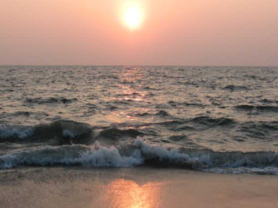
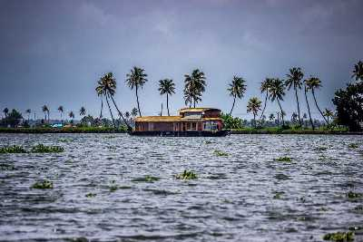

Alappuzha
Affectionately nicknamed the 'Venice of the East' by travellers from across the world, Alappuzha is a district of immense natural beauty. Embraced by the Arabian Sea in the west and a network of lakes, lagoons and freshwater rivers criss-crossing it, this backwater country is home toa vibrant animal and avian life. By virtue of its proximity to the sea, the town has always carved out an exclusive place for itself in the maritime history of Kerala. Renowned for its boat races, beaches, marine products and coir industry, the singularity of this land is the region called Kuttanad. A land of lush paddy fields referred to as the 'Rice Bowl of Kerala', it is one of the few places in the world where farming is done below sea level. This once prosperous trading and fishing centre is nowadays a world renowned backwater tourist destination.
TOURIST ATTRACTIONS

Alleppey Beach
Alappuzha is referred to as the Venice of the East which has always enjoyed an important place in the maritime history of Kerala. Presently it is famous for its boat races, backwater holidays, beaches, marine products and coir industry. Alappuzha beach is a popular picnic spot. The pier, which extends into the sea here, is over 137 years old. Entertainment facilities at the Vijaya Beach Park add to the attraction of the beach. There is also an old lighthouse nearby which plays a fascinating sight to the visitors from far and wide.

Alleppey Backwaters
Formed by the amalgamation of multiple of various waters sources, backwaters give you the postcard-perfect view with coconut trees lined all along and houseboats in the middle.

Vembanad Lake
The longest lake in India, Vembanad Lake flows across several districts in Kerala. It is called by several names including Punamada Lake, Kochi Lake, and Vembanadu Lake. Among the major highlights of this lake is Kettuvallams (houseboats), numerous resorts along the banks and the famous Nehru Trophy Boat Race.